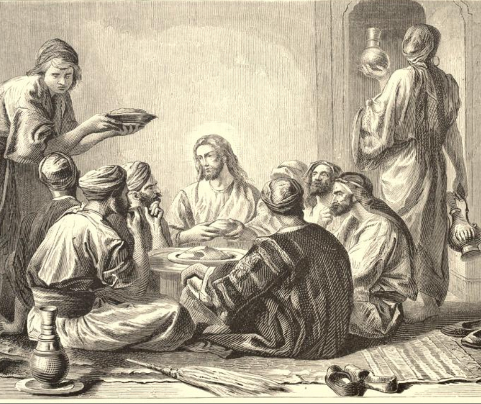
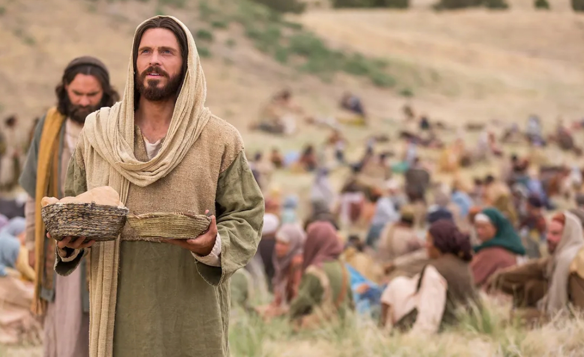

I believe food is one of the most powerful and underutilized ways we show love.
Across cultures and throughout history, meals have marked moments of belonging,
celebration, mourning, covenant, and connection. The act of preparing and sharing
food communicates care, intention, and presence in a way few other things can.
The concept of commensality—the practice of eating together—reveals how
shared meals strengthen social bonds. Sitting down at a table invites conversation,
vulnerability, and mutual recognition. Food slows us down and gives us permission
to be with one another rather than rush past one another.
Even Jesus Christ modeled this form of connection. Throughout His ministry, He
gathered with others over meals—teaching, listening, serving, and loving in ordinary
settings. From breaking bread with His disciples to eating with those on the margins,
He showed that gathering around a table is sacred ground where hearts can be softened
and relationships strengthened.


For me, cooking and hosting is an opportunity to give my time, attention, and care
to others. It is a way of saying, “You matter enough for me to prepare something
with intention.” Whether it is a simple meal or a thoughtfully planned gathering,
food becomes a bridge—connecting people not just to each other, but to moments
of peace, joy, and belonging.
My second passion is mind mapping as a tool for self-discovery, reflection, and
intentional life design. Rather than starting with rigid plans or titles, mind
mapping allows space for curiosity—helping patterns, interests, and strengths
emerge naturally over time.
The following process outlines a structured yet reflective approach to mind mapping
that helps individuals understand what truly energizes them and how they might
create meaningful work that serves others.
Step-by-Step Mind Mapping Process
-
Keep a Good Time Journal every day for two weeks. Each day, record
6–8 activities and rate how engaged, energized, and absorbed (including flow)
you felt during each activity.
-
Complete entries daily, focusing on the specific details of each experience.
The goal is to notice moments when you were genuinely having a good time.
-
At the end of two weeks, review your journal and identify:
- One activity where you felt deeply engaged
- One activity that gave you high energy
- One activity where you experienced flow
-
Create three separate mind maps—one for each of the activities
above. Allow related thoughts, skills, emotions, and environments to branch outward.
-
Examine the outer ring of each mind map and choose three elements that stand out.
Combine those elements into a possible job or role that would be interesting to you
and helpful to someone else.
-
Name each role and create a simple napkin sketch—a quick visual representation
of what that role looks like in practice.
-
Repeat this exercise three times, ensuring that each version is meaningfully
different from the others.
Weekly Reflection & Insight
Each week, review your Good Time Journal and reflect on emerging patterns,
surprises, and insights. Use the AEIOU framework to examine what made certain
experiences especially meaningful:
- Activities: What were you doing? What role did you play?
- Environments: Where were you? How did the space affect you?
- Interactions: Who or what were you engaging with?
- Objects: Were any tools or devices involved?
- Users: Who else was present, and what role did they play?
In addition to daily entries, complete one Good Time Journal focused on
historical peak experiences—past projects, volunteer work,
summer programs, or extracurriculars. Reflect on these “mountaintop” moments
to better understand long-term patterns of meaning and fulfillment.
Altogether, this process includes fifteen journal logs and three written reflections.
The purpose is not to judge or optimize prematurely, but to gather insight that
supports thoughtful, values-driven life design.